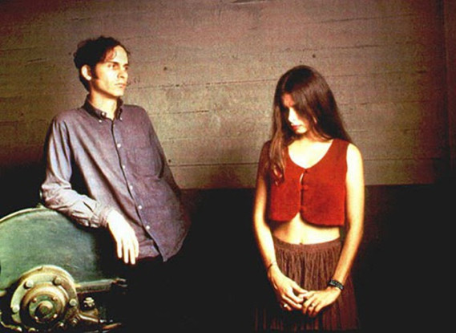
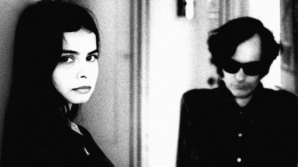
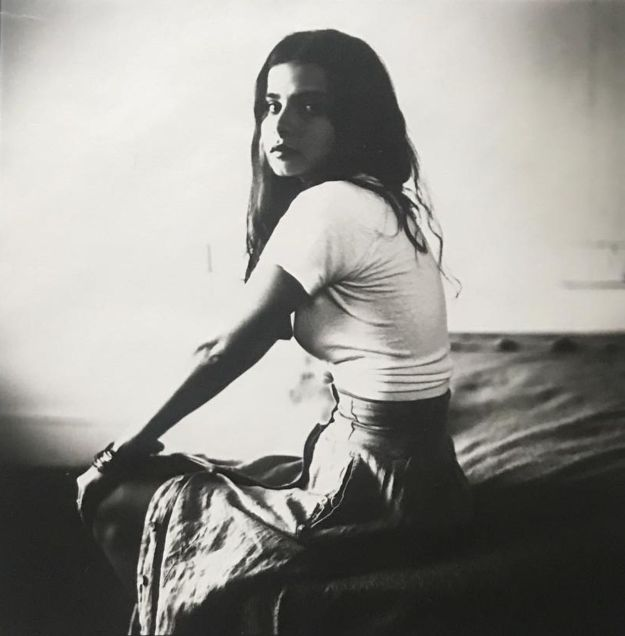
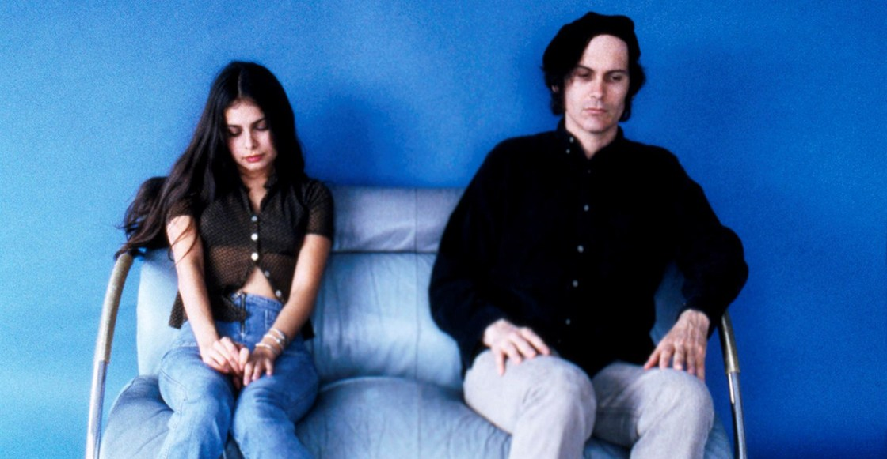
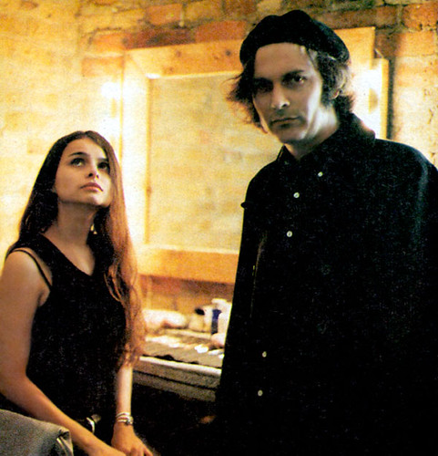

Hope y David (Mazzy Star)
por EmilianoABRIL 25, 2020

La famosa banda de los noventa que se caracterizó por sus escasas entrevistas -sólo hay una sola entrevista en video- el secretismo de sus integrantes, y una casi completa indiferencia a los modos tradicionales del rock. Integrada
por dos figuras que han resultado enigmáticas para muchas personas del medio por sus pocas palabras y sus comportamientos tan alejados de lo común en esa escena
Recuerdo la primera vez que los conocí en persona, en Los Angeles en el Hotel Roosevelt […] conocí a David y Hope, estaban sentados al lado de la fuente. Hope era muy callada. Probablemente un poco más eclipsada
por David en ese punto, que más tarde cuando ella sacó a relucir su propia individualidad. Es un alma muy gentil. Hope. Es como una reina, en cierto sentido. Y pienso sobre ella como la reina del Este de Los
Angeles. De voz baja, pero definida, inteligente y brillante, encantadora. David es más como un anciano estadista en lo que refiere a la música, pero con un gusto inmaculado. Igual, es muy callado, habla muy calladamente, pero es muy vivaz, con un gran sentido del humor. Pero un individuo bastante extraño,
David
Geoff Travis fundador de Rough Trade
Hope y David se sentaron en la oficina de Rough Trade todo el día, fumando y en silencio. No fueron horribles ni nada -eran muy amables- simplemente era difícil saber como complacerlos. Estuvieron ahí solamente por dos días pero se sintió como una eternidad
Trabajador de Rough Trade
Ambos David y Hope son descriptos una y otra vez por las personas que los encontraban como gente callada y tímida, inaccesibles, enfrascados en su propio mundo. David ya tenía un pasado musical antes de conocer a Hope y de
cierta manera también más experiencia tanto con la música como los medios. Por lo que es más fácil encontrar entrevistas suyas que de Hope, de quien sólo hay unas pocas, y en las cuales no revela demasiada información sobre
su carácter, salvo en las descripciones que hacen de estos encuentros los entrevistadores mismos
Hope se detiene ante la puerta abierta de la habitación. No se atreve a entrar. Se gira y espera que llegue David, cuando aparece los dos se quedan plantados en el pasillo del hotel. Ni una ni otro son capaces de dar un paso
adelante. No hacen ningún tipo de movimiento, hasta que llega el manager y los anima a traspasar el umbral. Ni se miran
La pareja celeste por fin entra y se sienta ante la grabadora. A Hope se la
come la vergüenza. Y los nervios. Continuamente está jugueteando con la llave de su habitación. Responde -las pocas veces que lo hace- siempre azorada, con un hilo de voz. Parece como si cualquier pregunta la estuviera poniendo en un aprieto. Como si tuviera que defenderse de algo de lo que se cree culpable. No contesta, se disculpa
David también pertenece a la secreta logia de los silenciosos.
Sin embargo, sus motivos son otros. Su principal preocupación es que sus respuestas no suenen pretenciosas. No obstante, cada vez que abre la boca se le escapa alguna frase con vistas a la inmortalidad.
Sus declaraciones suenan a filosofía barata y lo sabe. Solo ve una solución para no sonar pedante, callarse. Un silencio de no menos de diez segundos precede a cada -escueta- respuesta. a veces, ni eso. Simplemente no contestan. Las respuestas cortas son la especialidad de la banda.
Ni tajantes ni directas. Sólo breves, dejándolas colgando de puntos suspensivos. El mutismo de Mazzy Star llega a ser preocupante. Hasta las preguntas más inofensivas requieren una fase de espera
Joan Pons

Mi idea es que tanto Hope como David son dos Eneatipo Cinco. Mientras no podría decir exactamente que subtipo es David, en el caso de Hope creo que se trata precisamente de una Cinco Sexual,
hay en su música un marcado mundo romántico, de nostalgias, sentimientos y sufrimientos personales muy evidentes pero que como sucedía en el caso de Chopin, sólo encuentran salida en la música mientras en su vida personal, se muestra muy poco expresiva y emocionalmente ausente.
Tanto las entrevistas como los shows combinan una suerte de falta de expresividad, carácter taciturno, con expresividad extrema. Ninguno de los dos repara en decir lo que siente a través de sus letras
o breves intervenciones en entrevistas. Pero sin embargo se manejan como introvertidos y con la intención de que los dejen solos
Sin embargo quisiera hacer una aclaración. El caso mas visible como E5 me parece el de David,
de quién hay más entrevistas y material del cual poder deducir eso. En el caso de Hope, me parece que no hay suficiente información biográfica y sus rasgos de personalidad bien podrían parecer cinco,
pero pertenecer a otro eneatipo. De los demás tipos, el más factible de confundir con el cinco sería el seis conservación, y el cuatro social. Ambos descriptos como tímidos, o evitadores e introvertidos. El caso de Hope podría ser el de un Cuatro Social que
puede llegar a ser (visto desde afuera) igual de tímido que el cinco. También podría tratarse de un cuatro conservación, que se parece al cinco por su búsqueda y proyección de independencia y de autosuficiencia
La
diferencia es que el arte del cinco suele ser más genérico que el del cuatro, que suele ser más arriesgado, en el sentido de que hay mucho menos ocultamiento de la forma de ser de esa persona. También lo mismo sucede
respecto al carácter, mientras el cinco es muy poco asertivo, y puede mostrarse amable hacia afuera, el cuatro es un poco más alineado a su carácter, que no oculta tanto. Un cuatro, seis y cinco pueden decidir aislarse
de las personas pero los tres hacerlos por motivos disintos, un cuatro porque la gente le resulta molesta u odiosa (a lo Bukowski o Schopenhauer), un seis porque se siente vigilado o amenazado, y un cinco por desinterés,
porque no encuentra satisfacción en socializar
Hay diferencias que en este caso serían muy difíciles de marcar porque se trata de algo de lo que no hay información. Y viéndolo desde afuera, podemos pensar que
se trata de un eneatipo cuando en realidad se trata de otro
Volviendo al Cinco Sexual lo que en mi caso particular veo en Hope (o más bien en toda la banda) es una falta de expresividad,
que sólo se termina expresando en la música. Y una performance muy taciturna, obviamente siguiendo el estilo melancólico y sensible de la banda, que sólo podría llegar a los oídos de aquellos que estén lo demasiado
sensibilizados para escuchar. Muy similar a lo que ocurria con Nick Drake, que no lograba tener la atención del público cuando tocaba en vivo, porque la gente hablaba por encima suyo. Esta falta de conexión con la audiencia
y dificultad para transmitir entusiasmo me parece más característica del Cinco que de cualquier otro eneatipo. Aunque (a pesar que los cuatro tienen más capacidad de captar la atención de las personas) quizás también
sea algo característico del cuatro social que desconozca
De nuevo, no podemos saber si ese deseo de "no llamar la atención" de la gente, muy característica de los cinco que suelen o buscan pasar inadvertidos,
que circula toda la carrera musical de la banda, se trata de una actitud deliberada o de algo realmente característico. El cuatro suele perseguir más la atención del otro, como en el caso de Proust, que Naranjo diagnostica
como Cuatro Social marcado por una cierta dependencia emocional. La siguiente cita biográfica combina elementos de estos dos eneatipos
La pequeña tímida Hope Sandoval luchó para sobrellevar la escuela secundaria. Cuando estaba en cuarto grado, su timidez era tan severa que fue colocada en clases de educación especial, pero estar con los chicos más
ruidosos del sistema no ayudó, se salteaba las clases, quedándose en casa escuchando discos
Sus padres se habían separado cuando ella era más joven, su padre carnicero no estaba presente y su madre trabajaba en una empresa
que elaboraba papas fritas. Es como todo el mundo -diría Hope- alguna gente, la mayoría de la gente, no quiere ir a la escuela. Simplemente no quieren. No es, entretenido. Yo sólo fui alguien que consiguió salirse con la suya al respecto. -¿Cómo?- Simplemente lo hice. No había nadie realmente mirando -se ríe-. Eventualmente la escuela le dió a su madre un ultimatum, o Hope volvía a la escuela, o la escuela iba hacia ella.
Hope empezó a recibir un enseñanza particular, pero ya era tarde. Ella ya estaba empezando a salirse
por las noches, escapándose a los clubs a ver bandas. Falló de graduarse de la secundaria. Sus padres -ella dice- se resignaron al hecho. Ella piensa que es gracioso también. -dice- Ellos nunca se graduaron, así que ¿que podrían
decirme?
Naranjo también habla sobre la expresividad de Nijinsky, otro Cinco Sexual, de quién dice que era extrema, pero muy cortada en varias maneras. A pesar de la aparente falta de energía o de expresividad al tipo de lo
que es en común en una performance en shows. Las letras de Mazzy Star y la música comunican experiencias y sentimientos muy personales, que exigen una importante vulnerabilidad
Bueno, si estás escribiendo una novela y ocultas las cosas personales, no va a ser un muy buen libro -dice ella con una vehemencia inesperada- porque uno debe poder expresarse a uno mismo. Ya sabes, no se puede poner un límite a la auto-expresión
Hope Sandoval
Para mí grabar es mejor. En vivo, me pongo realmente nerviosa, una vez que estás en el escenario, la gente espera que hagas tu performance. Yo no hago eso. Siempre me siento incómoda de sólo pararme ahí y no hablar
con el público. Es difícil para mi
Somos una banda de rock, distinto a una banda folk. Nos dan toda esta atención, y es todo tan ruidoso, es todo grandes multitudes y eso es aterrador. Yo prefería un
pequeño puñado de gente. No hay intimidad nunca. El público se torna tan predecible. Somos parte de esta, escena musical, ya se, la próxima semana están en un show de “Belly” o algo así. Yo preferiría tocar junto a June Tabor
que al frente de un montón de ovejas
Todo el mundo te dice que el show fue genial, pero uno sabe que pudo haber malísimo, y les encantaría incluso más. Muchas veces siento que todos están esperando que vos “vueles”.
Y uno solo está ahi tratando de dar lo mejor, eso es todo. No tiene que ver con “satisfacer” a la gente
Personalmente, la paso difícil tocando en vivo. En gran parte es porque las letras son realmente privadas.
Con este disco pienso que es muy difícil tocar en vivo. Pienso que el álbum es muy oscuro y muchas de las canciones son acústicas, y parece que la mayoría de las veces, el público no está listo para eso. Muchos de ellos están solo pasando el tiempo, bebiendo.
Hay momentos incluso, cuando escuchás a la chica cerca tuyo, en el público, hablando sobre su vestuario o algo así. Se torna de este modo cuando adquirís cierta popularidad. Aparecen todos esos tipos de gente,
y a algunos no les importa
Solía ponerme bastante hostil al respecto -dice Hope- solía perder mi temperamento y decirle al público que se calle. En este tour, medio que lo estuve aguantando. Si estoy en el escenario
y el público parece muy ruidoso. Me giro a la banda y les digo, no haremos Into Dust -una canción acústica- hoy
En otra ocasión -contaba Hope- no me podía escuchar a mi misma porque había tanta gente hablando. Y después
que terminamos, todo el mundo aplaudió. Era obvio que nadie había realmente escuchado, y todos estaban simplemente dejándose llevar por la corriente. Into Dust la llamaríamos luego en la banda como la “Canción
Shh” aludiendo a los fans más devotos que callaban al resto cada vez que tocaban la canción
No entiendo por qué la gente espera que me comunique con el público -dice Hope- no hay nada malo en que yo sólo salga y cante y no hable ni baile.
Cuando empecé a tocar, era diferente. Me sentía bien al respecto, nadie sabía quién era, y teloneaba para tal y tal. Ahora, toco para gente que viene a ver la banda. Hay mucha atención puesta en la banda y en mí. Y es algo difícil concentrarse y relajarse,
porque mucha de esa gente conoce los discos, y tienen en cierto modo, una parte de tu persona. Sólo parace algo muy raro. No lo entiendo
Si uno nunca estuvo en un show de Mazzy Star, no sabe que es bastante incómodo
llegar y socializar y tener una especie de fiesta mientras la banda está tocando. No es música de fondo. Es frustrante estar en el escenario. Simplemente pienso que es grosero cuando alguien está hablando por encima de una canción muy tranquila sin prestar atención no veo cual es el punto de que vengan
El
público lo ha aceptado bastante, pienso. No es como solía ser. Creo que ahora que la gente ya ha venido a nuestros shows sabe que esperar. Es decir, no pienso que sea un gran tema. Hay muchos shows donde el cantante principal
y la banda no se suben, hacen una canción y bailan. Está bien si uno siente ganas de hacer eso, pero no creo que deba ser tomado en contra tuyo si no lo haces. No creo que signifique que sos peor que los demás, o menos interesante, que alguien que anda bailando por todo el escenario o charlando con el público. Pero se hace frustrante para mí, porque incluso filmando videos, me siento incómoda. Ojalá pudiera sentirme más relajada
Hope Sandoval sobre los shows

Arrojada por la perspectiva de revelarse a sí misma a un público, Hope recibe las preguntas del entrevistador sobre sus canciones del mismo modo en que mucha gente reacciona a los mendigos en la calle. En definitiva, ella quisiera que esas preguntas no estuvieran ahí
¿Auto-expresión pura en vez de un intento de comunicarse? Si -responde ella- Esa es la manera que es con todo el mundo, cuando uno lo piensa.
Cuando la gente saca álbums, no hay manera de que conozcan lo que el público va a pensar. Si se sientan y se preguntan ¿que clase de canción debería escribir? ¿qué estoy intentando que la gente sienta? Sólo están proyectando
su propio sentimiento a la gente para la que piensan que están haciendo los discos. Lo que realmente están tratando de hacer es de satisfacerse a ellos mismos. Eso es básicamente lo que intentamos hacer. Sólo tratamos de hacernos felices a nosotros mismos
Sobre
lo oscuro de sus canciones. Hay tantas cosas horribles pasando en el mundo -diría- y la mayoría de la gente, especialmente en la música, en la música rock, están como, ya sabes, parece como que estuvieran celebrando algo, quizás celebrando todo el dinero que están haciendo, no lo sé
Hope Sandoval
Yo era bastante diferente de los otros chicos. No congeniaba con ellos. No teníamos muchos intereses en común. Mis hobbies eran la historia y la psiquiatría. Tenía un amigo en mi calle que su padre era
psiquiatra, yo estaba muy metido en eso, estudiaba lo que sea.
Psicoanalizaba a mis amigos, conocí alguna gente extraña, pensadores agresivos que tuvieron una gran influencia en mí cuando era pequeño.
Es un buen lugar para empezar, si la gente empezara a pensar en cosas como esas desde chicos, serían mucho más sanos.
Soñar despierto era mi cápsula de escape. La música puede despertar eso. Todavía sueño despierto
un montón, en forma narrativa, más que todo
David Roback

No estamos muy interesados en el mundo exterior, es un proceso muy interno en el cual estamos involucrados. El mundo exterior no está realmente en nuestras mentes, al menos en lo que respecta
a la música. Estamos haciéndolo en nuestro propio mundo y para nosotros. Estamos comprometidos en las historias de cada canción individual. Es un mundo propio en sí mismo
David Roback
Estoy feliz con todos los aspectos de ello -la música- pero también soy miserable con todos los aspectos. Son agradables, son gratificantes, pero al mismo tiempo pueden ser difíciles y emocionales. En cada fase, hay felicidad,
hay disfrute, pero también hay tortura
Se volvió medio incómodo después de cierto tiempo -la fama- porque justamente empieza a convertirse en algo superficial. Básicamente se volvió un poco anti-natural.
Es mucho mejor ahora, ahora que la gente que viene a vernos tocar en vivo sabe que no será de esa manera. No van a esperar ninguna locura o conversación
Es muy duro -tocar en vivo- cuando fuimos
teloneros de The Jesus and Mary Chain, era muy angustiante. Nuestra música no estaba hecha para ese tipo de audiencia. Es muy extraño estar cantando algo muy personal desde muy adentro y que nadie te haga caso.
Si además te gritan, ya es imposible. Pensás, -ok si no les importa lo que hago, no tengo por qué seguir tocando-. Preferimos cierta complicidad con el público. Pero también es extraño. Si la gente
está callada, nunca sabes si realmente gusta lo que haces o no. No sabes que pasa, el silencio es algo que no da ninguna pista
Hope Sandoval
Era muy idealista. Pensaba, me voy a retirar y hacer música por mi cuenta, no ser parte de ninguna escena. No sentía que la aceptación o la atención eran importantes para mí. Sólo quería hacer música que
yo sintiera y si a la gente le gustara, bien, de cualquier manera, la música misma sería suficiente recompensa
Depende de cada uno juzgar si Mazzy Star son un grupo misterioso o no. No podemos controlarlo. No
sé. Creo que los sentimientos que intentamos expresar están muy claros. En realidad, sí creo que somos un grupo misterioso y extraño. Lo creo en serio. No se por qué. Supongo que porque nuestra música es muy personal.
Y toda persona esconde algún misterio. Es imposible saberlo todo. No hay nada más misterioso que intentar adivinar qué hay dentro de cada persona. Qué piensas, qué sientes, hay muchos elementos ocultos. En realidad
todos somos desconocidos
No hacemos música para que nos entiendan o nos malinterpreten. Reconozco que nuestras canciones son muy serias. Lo sé. En principio, nuestra música habla del vacío de la existencia. De la monotonía de nuestras vidas.
Es un sentimiento común en mucha gente. Supongo que la gente que cree que sonamos melancólicos conecta con ese sentimiento
David Roback

Finalmente agrego otros testimonios de conocidos e integrantes de la banda que describen nuevamente con mucha utilidad las personalidades de David y Hope
Era Hope Sandoval de Mazzy Star que era tan prima donna que el show nunca salió al aire. Después de extender su sesión de estudio a tres horas y en general hacerle pasar a todos un momento difícil. En la entrevista -dice
Dye- ella empezó a responder las preguntas, asintiendo con la cabeza. Eso no funciona en la radio. La entrevista terminó y nunca salió al aire
David Dye anfitrión de radio de World Cafe
David era bastante serio bastante reflexivo, no hablaba demasiado. Me agradaba bastante. Hope era super tímida. Había frecuentemente un poco de tensión entre ellos. Algunas veces ella simplemente se iba del escenario. No tenía la impresión que ella disfrutara particularmente los shows en vivo
Simon Raymonde
Su mundo musical parecía incansablemente insular, como lo mostraba no solo su celosa custodia de cualquier dato personal por su, parece, orgulloso rechazo no sólo de la industria musical, pero de la
mayoría de la música en sí misma. Si alguna vez se podía decir sobre un hombre que era auto-suficiente, sería sobre David Roback
Jim Greer
Fui a la sala de ensayo. Todos eran tan reservados. Era bastante shockeante, viniendo de una banda como Hole, con una Courtney Love de presencia tan agresiva. Extrañamente, la calma de todos coincidía con la abrasividad de Hole,
pero en un nivel muy diferente
Jill Emery ex-bajista de Hole
De toda la gente en esa escena, mantuve contacto con casi todos de alguna manera u otra con el pasar de los años, pero David, no era tan fácil de conocer
Steve Wynn
Pensaba que David era tímido. Si, y algo misterioso ¿Que pienso que nos conectó? A ambos nos gustaba la música del otro. Eso era todo lo que era. No nos comunicabamos demasiado, mas allá de simplemente disfrutar la música del otro
Hope Sandoval